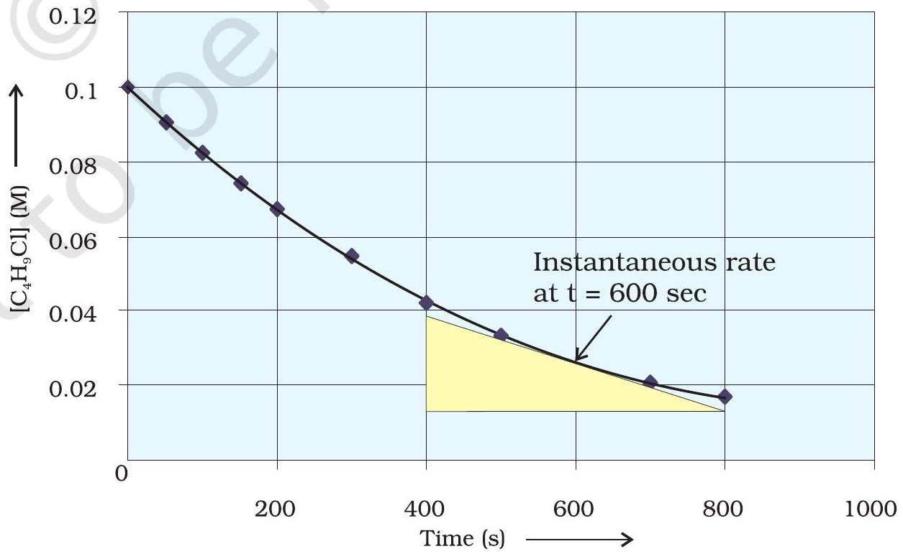
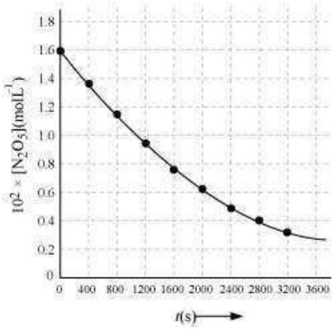
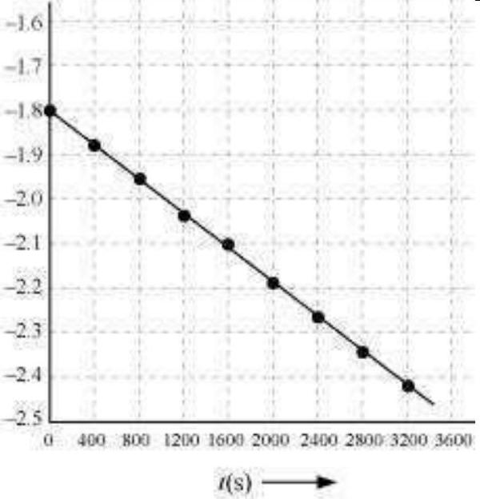

From the concentrations of C4 H9 Cl (butyl chloride) at different times given below, calculate the average rate of the reaction:
C4 H9 Cl+H2 O → C4 H9 OH+HCl
during different intervals of time.
| t / s | 0 | 50 | 100 | 150 | 200 | 300 | 400 | 700 | 800 |
|---|---|---|---|---|---|---|---|---|---|
| [C4 H9 Cl] / mol L-1 | 0.100 | 0.0905 | 0.0820 | 0.0741 | 0.0671 | 0.0549 | 0.0439 | 0.0210 | 0.017 |
| [C4 H9 CI]t1 / mol L-1 | [C4 H9 CI]t2 / m o l L- 1 | t1 / s | t2 / s | rav × 104 / mol L-1 s-1 = -{[C4 H9 Cl]t2-[C4 H9 Cl]t1 / (t2-t1)} × 104 |
|---|---|---|---|---|
| 0.100 | 0.0905 | 0 | 50 | 1.90 |
| 0.0905 | 0.0820 | 50 | 100 | 1.70 |
| 0.0820 | 0.0741 | 100 | 150 | 1.58 |
| 0.0741 | 0.0671 | 150 | 200 | 1.40 |
| 0.0671 | 0.0549 | 200 | 300 | 1.22 |
| 0.0549 | 0.0439 | 300 | 400 | 1.10 |
| 0.0439 | 0.0335 | 400 | 500 | 1.04 |
| 0.0210 | 0.017 | 700 | 800 | 0.4 |

The decomposition of N2 O5 in CCl4 at 318K has been studied by monitoring the concentration of N2 O5 in the solution. Initially the concentration of N2 O5 is 2.33 mol L-1 and after 184 minutes, it is reduced to 2.08 mol L-1. The reaction takes place according to the equation
2 N2 O5( g) → 4 NO2( g)+O2( g)
Calculate the average rate of this reaction in terms of hours, minutes and seconds. What is the rate of production of NO2 during this period?
Calculate the overall order of a reaction which has the rate expression
Rate = k[ A]1 / 2[ B]3 / 2
Rate = k[ A]3 / 2[ B]-1
Identify the reaction order from each of the following rate constants.
k = 2.3 × 10-5 L mol-1 s-1
k = 3 × 10-4 s-1
The initial concentration of N2 O5 in the following first order reaction N2 O5( g) → 2 NO2( g)+1 / 2 O2( g) was 1.24 × 10-2 mol L-1 at 318 K. The concentration of N2 O5 after 60 minutes was 0.20 × 10-2 mol L-1. Calculate the rate constant of the reaction at 318 K.
The following data were obtained during the first order thermal decomposition of N2 O5(g) at constant volume:
| 2 N2 O5( g) → 2 N2 O4( g)+O2( g) |
|---|
| S.No. | Time / s | Total Pressure / (atm) |
|---|---|---|
| 1. | 0 | 0.5 |
| 2. | 100 | 0.512 |
Calculate the rate constant.
| 2 N2 O5( g) | → | 2 N2 O4( g) | + | O2( g) | |
|---|---|---|---|---|---|
| Start t = 0 | 0.5 atm | 0 atm | 0 atm | ||
| At time t | (0.5-2x) atm | 2x atm | x atm |
A first order reaction is found to have a rate constant, k = 5.5 × 10-14 s-1. Find the half-life of the reaction.
Show that in a first order reaction, time required for completion of 99.9% is 10 times of half-life ( t1 / 2 ) of the reaction.
The rate constants of a reaction at 500K and 700K are 0.02 s-1 and 0.07 s-1 respectively. Calculate the values of Ea and A.
The first order rate constant for the decomposition of ethyl iodide by the reaction
C2 H5 I( g) → C2 H4( g)+HI( g)
at 600K is 1.60 × 10-5 s-1. Its energy of activation is 209 kJ / mol. Calculate the rate constant of the reaction at 700K.
For the reaction R → P, the concentration of a reactant changes from 0.03M to 0.02M in 25 minutes.
Calculate the average rate of reaction using units of time both in minutes and seconds.
In a reaction, 2A → Products, the concentration of A decreases from 0.5 mol L-1 to 0.4 mol L-1 in 10 minutes. Calculate the rate during this interval?
For a reaction, A+B → Product; the rate law is given by, r = k[ A]1 / 2[ B]2. What is the order of the reaction?
The conversion of molecules X to Y follows second order kinetics.
If concentration of X is increased to three times how will it affect the rate of formation of Y ?
A first order reaction has a rate constant 1.15 × 10-3 s-1. How long will 5 g of this reactant take to reduce to 3 g?
Time required to decompose SO2 Cl2 to half of its initial amount is 60 minutes. If the decomposition is a first order reaction, calculate the rate constant of the reaction.
What will be the effect of temperature on rate constant ?
The rate of the chemical reaction doubles for an increase of 10K in absolute temperature from 298K. Calculate Ea.
The activation energy for the reaction
2 HI(g) → H2+I2(g)
is 209.5 kJ mol-1 at 581 K .Calculate the fraction of molecules of reactants having energy equal to or greater than activation energy?
From the rate expression for the following reactions, determine their order of reaction and the dimensions of the rate constants.
For the reaction:
2 A+B → A2 B
the rate = k[ A][B]2 with k = 2.0 × 10-6 mol-2 L2 s-1. Calculate the initial rate of the reaction when [A] = 0.1 mol L-1,[ B] = 0.2 mol L-1. Calculate the rate of reaction after [A] is reduced to 0.06 mol L-1.
The decomposition of NH3 on platinum surface is zero order reaction. What are the rates of production of N2 and H2 if k = 2.5 × 10-4 mol-1 L s-1 ?
The decomposition of dimethyl ether leads to the formation of CH4, H2 and CO and the reaction rate is given by
Rate = k[CH3 OCH3]3 / 2
The rate of reaction is followed by increase in pressure in a closed vessel, so the rate can also be expressed in terms of the partial pressure of dimethyl ether, i.e.,
Rate = k(pCH3 OCH3)3 / 2
If the pressure is measured in bar and time in minutes, then what are the units of rate and rate constants?
Mention the factors that affect the rate of a chemical reaction.
A reaction is second order with respect to a reactant.
How is the rate of reaction affected if the concentration of the reactant is
What is the effect of temperature on the rate constant of a reaction? How can this effect of temperature on rate constant be represented quantitatively?
In a pseudo first order reaction in water, the following results were obtained:
| t / s | 0 | 30 | 60 | 90 |
|---|---|---|---|---|
| [A] / mol L-1 | 0.55 | 0.31 | 0.17 | 0.085 |
Calculate the average rate of reaction between the time interval 30 to 60 seconds.
A reaction is first order in A and second order in B.
In a reaction between A and B, the initial rate of reaction (r0) was measured for different initial concentrations of A and B as given below:
| A / mol L-1 | 0.20 | 0.20 | 0.40 |
|---|---|---|---|
| B / mol L-1 | 0.30 | 0.10 | 0.05 |
| r0 / mol L-1 s-1 | 5.07 × 10-5 | 5.07 × 10-5 | 1.43 × 10-4 |
What is the order of the reaction with respect to A and B?
The following results have been obtained during the kinetic studies of the reaction:
2 A+B → C+D
| Experiment | [A] / mol L-1 | [B] / mol L-1 | Initial rate of formation of D / mol L-1 min-1 |
|---|---|---|---|
| I | 0.1 | 0.1 | 6.0 × 10-3 |
| II | 0.3 | 0.2 | 7.2 × 10-2 |
| III | 0.3 | 0.4 | 2.88 × 10-1 |
| IV | 0.4 | 0.1 | 2.40 × 10-2 |
Determine the rate law and the rate constant for the reaction.
The reaction between A and B is first order with respect to A and zero order with respect to B.
Fill in the blanks in the following table:
| Experiment | [A] / mol L-1 | [B] / mol L-1 | Initial rate / mol L-1 min-1 |
|---|---|---|---|
| I | 0.1 | 0.1 | 2.0 × 10-2 |
| II | - | 0.2 | 4.0 × 10-2 |
| III | 0.4 | 0.4 | - |
| IV | - | 0.2 | 2.0 × 10-2 |
Calculate the half-life of a first order reaction from their rate constants given below:
The half-life for radioactive decay of 14 C is 5730 years. An archaeological artifact containing wood had only 80% of the 14 C found in a living tree. Estimate the age of the sample.


The experimental data for decomposition of N2 O5
[2 N2 O5 → 4 NO2+O2]
in gas phase at 318K are given below:
| t / s | 0 | 400 | 800 | 1200 | 1600 | 2000 | 2400 | 2800 | 3200 |
|---|---|---|---|---|---|---|---|---|---|
| 102 × [N2 O5] / mol L-1 | 1.63 | 1.36 | 1.14 | 0.93 | 0.78 | 0.64 | 0.53 | 0.43 | 0.35 |
| t(s) | 102 × [N2 O5] / mol L-1 | log[N2 O5] |
|---|---|---|
| 0 | 1.63 | - 1.79 |
| 400 | 1.36 | - 1.87 |
| 800 | 1.14 | - 1.94 |
| 1200 | 0.93 | - 2.03 |
| 1600 | 0.78 | - 2.11 |
| 2000 | 0.64 | - 2.19 |
| 2400 | 0.53 | - 2.28 |
| 2800 | 0.43 | - 2.37 |
| 3200 | 0.35 | - 2.46 |
The rate constant for a first order reaction is 60 s-1. How much time will it take to reduce the initial concentration of the reactant to its 1 / 16th value?
During nuclear explosion, one of the products is 90 Sr with half-life of 28.1 years. If 1 μ g of 90 Sr was absorbed in the bones of a newly born baby instead of calcium, how much of it will remain after 10 years and 60 years if it is not lost metabolically.
For a first order reaction, show that time required for 99% completion is twice the time required for the completion of 90% of reaction.
A first order reaction takes 40 min for 30% decomposition. Calculate t1 / 2.
For the decomposition of azoisopropane to hexane and nitrogen at 543 K, the following data are obtained.
| t(sec) | P(mm of Hg) |
|---|---|
| 0 | 35.0 |
| 360 | 54.0 |
| 720 | 63.0 |
Calculate the rate constant.
The following data were obtained during the first order thermal decomposition of SO2 Cl2 at a constant volume.
SO2 Cl2( g) → SO2( g)+Cl2( g)
| Experiment | Time / s-1 | Total pressure / atm |
|---|---|---|
| 1 | 0 | 0.5 |
| 2 | 100 | 0.6 |
Calculate the rate of the reaction when total pressure is 0.65 atm.
The rate constant for the decomposition of N2 O5 at various temperatures is given below:
| T / ° C | 0 | 20 | 40 | 60 | 80 |
|---|---|---|---|---|---|
| 105 × k / s-1 | 0.0787 | 1.70 | 25.7 | 178 | 2140 |
Draw a graph between ln k and 1 / T and calculate the values of A and Ea. Predict the rate constant at 30° and 50°C.
| T / °C | 0 | 20 | 40 | 60 | 80 |
|---|---|---|---|---|---|
| T / K | 273 | 293 | 313 | 333 | 353 |
| 103 × 1T( K-1) → | 3.66 × 10-3 | 3.41 × 10-3 | 3.19 × 10-3 | 3.0 × 10-3 | 2.83 × 10-3 |
|---|---|---|---|---|---|
| 105 × k / s-1 | 0.0787 | 1.70 | 25.7 | 178 | 2140 |
| ln k | -7.147 | - 4.075 | -1.359 | -0.577 | 3.063 |
The rate constant for the decomposition of hydrocarbons is 2.418 × 10-5 s-1 at 546 K. If the energy of activation is 179.9 kJ / mol, what will be the value of pre-exponential factor.
Consider a certain reaction A → Products with k = 2.0 × 10-2 s-1. Calculate the concentration of A remaining after 100 s if the initial concentration of A is 1.0 mol L-1.
Sucrose decomposes in acid solution into glucose and fructose according to the first order rate law, with t1 / 2 = 3.00 hours. What fraction of sample of sucrose remains after 8 hours ?
The decomposition of hydrocarbon follows the equation
k = (4.5 × 1011 s-1) e-28000 K / T
Calculate Ea.
The rate constant for the first order decomposition of H2 O2 is given by the following equation:
log k = 14.34-1.25 × 104 K / T
Calculate Ea for this reaction and at what temperature will its half-period be 256 minutes?
The decomposition of A into product has value of k as 4.5 × 103 s-1 at 10° C and energy of activation 60 kJ mol-1. At what temperature would k be 1.5 × 104 s-1 ?
The time required for 10% completion of a first order reaction at 298K is equal to that required for its 25% completion at 308K. If the value of A is 4 × 1010 s-1. Calculate k at 318K and Ea.
The rate of a reaction quadruples when the temperature changes from 293 K to 313 K.
Calculate the energy of activation of the reaction assuming that it does not change with temperature.